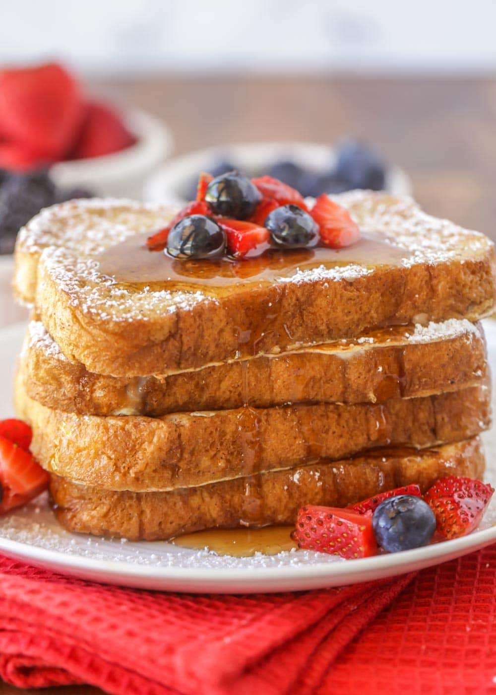

Fluffy French Toast

Ingredients for the recipe
- 1/4 cup all-purpose flour
- 1 cup milk
- 1 pinch salt
- 3 eggs
- 1/2 teaspoon ground cinnamon
- 1 teaspoon vanilla extract
- 1 tablespoon white sugar
- 12 thick slices of bread
Directions for the recipe
- Measure flour into a large mixing bowl. Slowly whisk in the milk. Whisk in the salt, eggs, cinnamon, vanilla extract and sugar until smooth.
- Heat a lightly oiled griddle or frying pan over meduim heat.
- Soak bread slices in mixture until saturated. Cook bread on each side until golden brown. Serve hot.
Return to main page